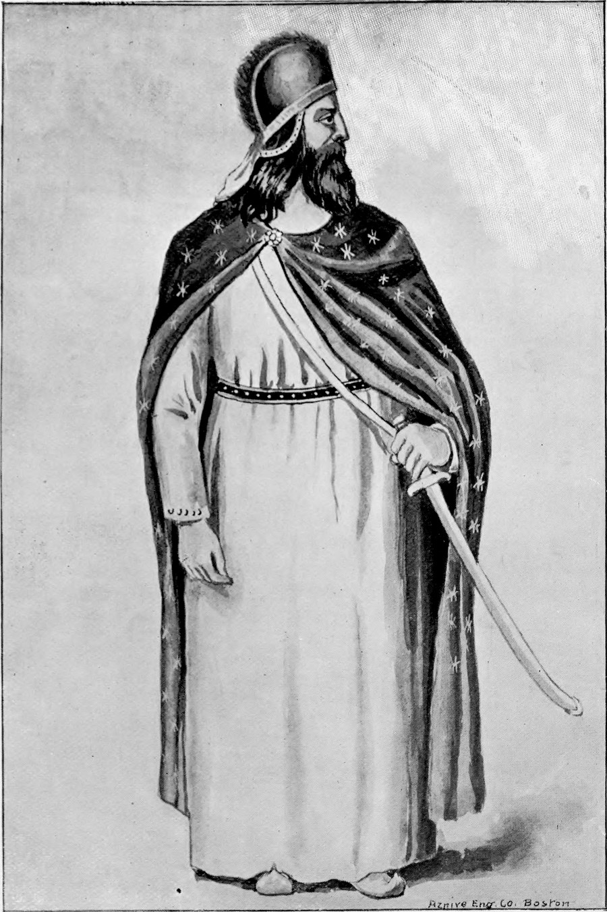

King Abgar V of Edessa receiving the messenger.
Quick Summary
In Lesson 3, we examined the Peal Perfect tense (the suffix
conjugation), learning how Syriac describes completed, past actions. The
sentence structure shifted from fluidly subject-led (in the present
participle) to stringently Verb-Subject-Object (VSO) led narrative
chains using the conjunction w- (and).
5-Question Warm-Up Drill
(Answers in Section 9)
-ū indicate on a Perfect verb
(e.g., ktabū)?In English, we indicate possession using separate pronouns placed before a noun: “my house”, “your king”. In Greek, it’s often an independent genitive pronoun: ὁ οἶκός μου (ho oikos mou).
However, in Semitic languages, possession is expressed by attaching a pronominal suffix directly to the end of the noun.
Cross-Linguistic Comparison: The Possessive Suffix
These suffixes are derived from the same ancient roots as the independent pronouns (ʾenā, ʾant, hū) but are highly compressed.
1. Suffixes on Singular Nouns
To add a suffix, Syriac drops the Emphatic state ending (-ā)
and attaches the suffix to the bound/construct stem of the noun. (You
don’t say “the my-king” *malkā-y; you say “king-my”,
malk-y).
2. Suffixes on Prepositions
The exact same suffixes attach to the inseparable prepositions
b- (in) and l- (to/for).
3. The Idiom for “To Have”
Syriac (like Hebrew and Arabic) lacks a dedicated verb meaning “to possess” (like English “to have” or Latin “habere”). Instead, Semitic languages use a prepositional phrase: “there is to me” or just “to me”.
This paradigm uses the masculine noun malk- (king, root m-l-k) and the feminine noun malkūt- (kingdom). Notice the suffix column; you must memorize these endings.
| Person | Suffix | Masculine Noun (malk-) | Translit | Fem Noun (malkūt-) | Translit |
|---|---|---|---|---|---|
| 1 c.sg. (my) | ـܝ (-y) | ܡܠܟܝ | malk-y | ܡܠܟܘܬܝ | malkūt-y |
| 2 m.sg. (your) | ـܟ (-k) | ܡܠܟܟ | malk-āḵ | ܡܠܟܘܬܟ | malkūt-āḵ |
| 2 f.sg. (your) | ـܟܝ (-ky) | ܡܠܟܟܝ | malk-ēky | ܡܠܟܘܬܟܝ | malkūt-ēky |
| 3 m.sg. (his) | ـܗ (-eh) | ܡܠܟܗ | malk-eh | ܡܠܟܘܬܗ | malkūt-eh |
| 3 f.sg. (her) | ـܗ (-āh) | ܡܠܟܗ | malk-āh | ܡܠܟܘܬܗ | malkūt-āh |
| 1 c.pl. (our) | ـܢ (-n) | ܡܠܟܢ | malk-an | ܡܠܟܘܬܢ | malkūt-an |
| 2 m.pl. (your) | ـܟܘܢ (-kūn) | ܡܠܟܟܘܢ | malk-kūn | ܡܠܟܘܬܟܘܢ | malkūt-kūn |
| 2 f.pl. (your) | ـܟܝܢ (-kēn) | ܡܠܟܟܝܢ | malk-kēn | ܡܠܟܘܬܟܝܢ | malkūt-kēn |
| 3 m.pl. (their) | ـܗܘܢ (-hūn) | ܡܠܟܗܘܢ | malk-hūn | ܡܠܟܘܬܗܘܢ | malkūt-hūn |
| 3 f.pl. (their) | ـܗܝܢ (-hēn) | ܡܠܟܗܝܢ | malk-hēn | ܡܠܟܘܬܗܝܢ | malkūt-hēn |
Orthography Note: The 3rd masculine singular (-eh) and 3rd feminine singular (-āh) are both spelled with a final He (ܗ). Only vowel pointing or context distinguishes “his” from “her”.
How to say “I have”, “You have”, “He has”, etc., by attaching
suffixes to the l- preposition, often preceded by
ʾīt (there is).
| Person | Estrangela (l- + suffix) | Transliteration | Meaning |
|---|---|---|---|
| 1 c.sg. | ܠܝ | lī | to me (I have) |
| 2 m.sg. | ܠܟ | lāḵ | to you (You [m.sg.] have) |
| 2 f.sg. | ܠܟܝ | lēky | to you (You [f.sg.] have) |
| 3 m.sg. | ܠܗ | leh | to him (He has) |
| 3 f.sg. | ܠܗ | lāh | to her (She has) |
| 1 c.pl. | ܠܢ | lān | to us (We have) |
| 2 m.pl. | ܠܟܘܢ | lḵūn | to you (You [m.pl.] have) |
| 2 f.pl. | ܠܟܝܢ | lḵēn | to you (You [f.pl.] have) |
| 3 m.pl. | ܠܗܘܢ | lhūn | to them (They [m.pl.] have) |
| 3 f.pl. | ܠܗܝܢ | lhēn | to them (They [f.pl.] have) |
Family and body parts are the most common nouns to receive pronominal suffixes. (Note: ʾabā ‘father’ and ʾaḥā ‘brother’ insert -ū- before suffixes other than 1 c.sg., e.g. ʾabūḵ ‘your father’, ʾabūhy ‘his father’).
| Construct / Emphatic | Transliteration | Meaning | Example with Suffix (1 c.sg.) |
|---|---|---|---|
| ܐܒ / ܐܒܐ | ʾab / ʾabā | Father | ʾab-y (my father) |
| ܐܡ / ܐܡܐ | ʾem / ʾemmā | Mother | ʾem-y (my mother) |
| ܒܪ / ܒܪܐ | bar / brā | Son | bar-y (my son) |
| ܒܪܬ / ܒܪܬܐ | bart / bartā | Daughter | brat-y (my daughter) |
| ܐܚ / ܐܚܐ | ʾaḥ / ʾaḥā | Brother | ʾaḥ-y (my brother) |
| ܐܝܕ / ܐܝܕܐ | ʾīd / ʾīdā | Hand (f) | ʾīd-y (my hand) |
| ܪܝܫ / ܪܝܫܐ | rēš / rēšā | Head (m) | rēš-y (my head) |
| ܩܠ / ܩܠܐ | qāl / qālā | Voice (m) | qāl-y (my voice) |
| ܠܒܘܫ / ܠܒܘܫܐ | lbūš / lbūšā | Garment | lbūš-y (my garment) |
| ܒܝܬ / ܒܝܬܐ | bēt / baytā | House | bayt-y (my house) |
| ܢܛܘܪ / ܢܛܘܪܐ | nāṭōr / nāṭōrā | Guard, watchman (pl. nāṭōrē) | nāṭōr-y (my guard) |
| ܡܐ / ܡܢܐ | mā / mānā | What? | (Interrogative pronoun) |
| ܐܝܟܐ | ʾaykā | Where? | (Interrogative adverb; with 3 m.sg. enclitic: ܐܝܟܘ ʾaykaw “where is he?”) |
A Dialogue at the Gate
Narrative note: Watch how the guards use suffixes with
prepositions (leh, lāḵ) and nouns
(ʾabūḵ, ʾemmāḵ) to interrogate Yukhannan about
his origins and possessions.
Sentence 1
ܩܡ ܝܘܚܢܢ ܒܬܪܥܐ ܕܡܠܟܘܬܐ qām Yūḥannan b-tarʿā d-malkūtā. qām (stood) Yūḥannan (John) b-tarʿā (in-the-gate) d-malkūtā (of-the-kingdom). → Yukhannan stood at the gate of the kingdom.
Sentence 2
ܘܐܡܪܝܢ ܢܛܘܪܐ ܕܬܪܥܐ ܠܗ w-ʾāmrīn nāṭōrē d-tarʿā leh: w-ʾāmrīn (and-are-saying) nāṭōrē (the-guards) d-tarʿā (of-the-gate) leh (to-him): → And the guards of the gate say to him:
Sentence 3
ܡܢ ܐܝܢܐ ܐܬܪܐ ܐܢܬ men ʾaynā ʾatrā ʾant? men (from) ʾaynā (what) ʾatrā (country/place) ʾant (you-[are])? → “From what country are you?”
Sentence 4
ܘܐܝܟܐ ܐܒܘܟ ܘܐܡܟ w-ʾaykā ʾab-ūḵ w-ʾemm-āḵ? w-ʾaykā (and-where) ʾab-ūḵ (father-your) w-ʾemm-āḵ (and-mother-your)? → “And where are your father and your mother?”
Sentence 5
ܘܡܐ ܐܝܬ ܠܟ ܒܐܝܕܟ w-mā ʾīt lāḵ b-ʾīd-āḵ? w-mā (and-what) ʾīt (there-is) lāḵ (to-you) b-ʾīd-āḵ (in-hand-your)? → “And what do you have in your hand?”
Sentence 6
ܐܡܪ ܠܗܘܢ ܝܘܚܢܢ ʾemar lhūn Yūḥannan: ʾemar (said) lhūn (to-them) Yūḥannan (John): → Yukhannan said to them:
Sentence 7
ܐܠܗܐ ܗܘ ܐܒܝ ܘܐܪܥܐ ܗܝ ܐܡܝ ʾAlāhā hū ʾab-y, w-ʾarʿā hī ʾem-y. ʾAlāhā (God) hū (he-[is]) ʾab-y (father-my), w-ʾarʿā (and-the-earth) hī (she-[is]) ʾem-y (mother-my). → “God is my father, and the earth is my mother.”
Sentence 8
ܘܠܝܬ ܠܝ ܠܒܘܫܐ ܒܝܫܐ w-layt lī lbūšā bīšā. w-layt (and-there-is-not) lī (to-me) lbūšā (a-garment) bīšā (evil). → “And I do not have an evil garment.”
Sentence 9
ܢܘܗܪܐ ܕܐܠܗܐ ܐܝܬܘܗܝ ܒܐܝܕܝ nūhrā d-ʾAlāhā ʾītawhy b-ʾīd-y. nūhrā (the-light) d-ʾAlāhā (of-God) ʾītawhy (it-is) b-ʾīd-y (in-hand-my). → “The light of God is in my hand.”
Exercise 1: Suffix Identification
Identify the person, gender, and number of the possessor for the following suffixed nouns.
Exercise 2: Conjugation Drill (Possession)
Translate the following phrases using l- + suffix (using
ʾīt where appropriate to mean “have”):
Exercise 3: Translation Drill (Syriac → English)
Translate the following sentences containing suffixed nouns.
Exercise 4: Production Drill (English → Syriac)
Render the following sentences into Syriac transliteration.
Exercise 5: Reading Comprehension
Re-read Section 7 and answer:
Section 1 Warm-Up
Exercise 1: Suffix Identification
Exercise 2: Conjugation Drill
Exercise 3: Translation Drill
Exercise 4: Production Drill
Exercise 5: Reading Comprehension
THE PRONOMINAL SUFFIXES (ATTACH TO NOUNS AND PREPOSITIONS)
| Suffix | Meaning | Example (bayt- house) | Example (l- to) |
|---|---|---|---|
| -y | my | bayt-y (my house) | lī (to me) |
| -k | your (m.sg.) | baytāḵ (your house) | lāḵ (to you) |
| -ky | your (f.sg.) | baytēky (your house) | lēky (to you) |
| -eh | his | bayteh (his house) | leh (to him) |
| -āh | her | baytāh (her house) | lāh (to her) |
| -an | our | baytan (our house) | lān (to us) |
| -kūn | your (m.pl.) | baytkūn (your house) | lḵūn (to you all) |
| -kēn | your (f.pl.) | baytkēn (your house) | lḵēn (to you all) |
| -hūn | their (m.pl.) | baythūn (their house) | lhūn (to them) |
| -hēn | their (f.pl.) | baythēn (their house) | lhēn (to them) |
SAYING “TO HAVE” (Possession Formula)
| Formula | Syriac | Meaning |
|---|---|---|
| ʾĪT + L- + Suffix | ʾīt lī | I have (There is to me) |
| LAYT + L- + Suffix | layt leh | He does not have |
| ʾĪT + L- + Suffix | ʾīt lhūn malkā | They have a king |
The following 18 high-frequency words supplement this lesson’s vocabulary for family, the body, and personal qualities.
| Syriac (Estrangela) | Transliteration | Part of Speech | Meaning | Notes |
|---|---|---|---|---|
| ܣܦܬܐ | septā | f. noun | lip | emphatic state (pl. sepwātā) |
| ܬܠܓܐ | talgā | m. noun | snow | |
| ܐܠܥܐ | ʾelʿā | f. noun | rib, side | |
| ܥܛܡܐ | ʿaṭmā | f. noun | thigh, side | |
| ܕܪܥܐ | darʿā | f. noun | arm | |
| ܫܩܐ | šāqā | f. noun | leg, shin, calf | |
| ܚܬܢܐ | ḥatnā | m. noun | bridegroom | |
| ܟܠܬܐ | kaltā | f. noun | bride | |
| ܕܕܐ | dādā | m. noun | uncle (paternal) | |
| ܥܡܬܐ | ʿammtā | f. noun | aunt (paternal) | |
| ܥܡܝܩܐ | ʿammīqā | m. adj | deep | |
| ܦܠܛܐ | palṭā | m. noun | escape, safety | |
| ܥܬܝܪܐ | ʿattīrā | m. adj | rich, wealthy | |
| ܡܣܟܢܐ | meskēnā | m. adj | poor, humble | |
| ܓܢܒܪܐ | gabbārā | m. adj | mighty, strong | |
| ܩܠܝܠܐ | qallīlā | m. adj | light, swift, few | |
| ܝܚܝܕܝܐ | īḥīdāyā | m. adj | only-begotten, solitary | |
| ܟܐܢܐ | kēnā | m. adj | just, righteous |